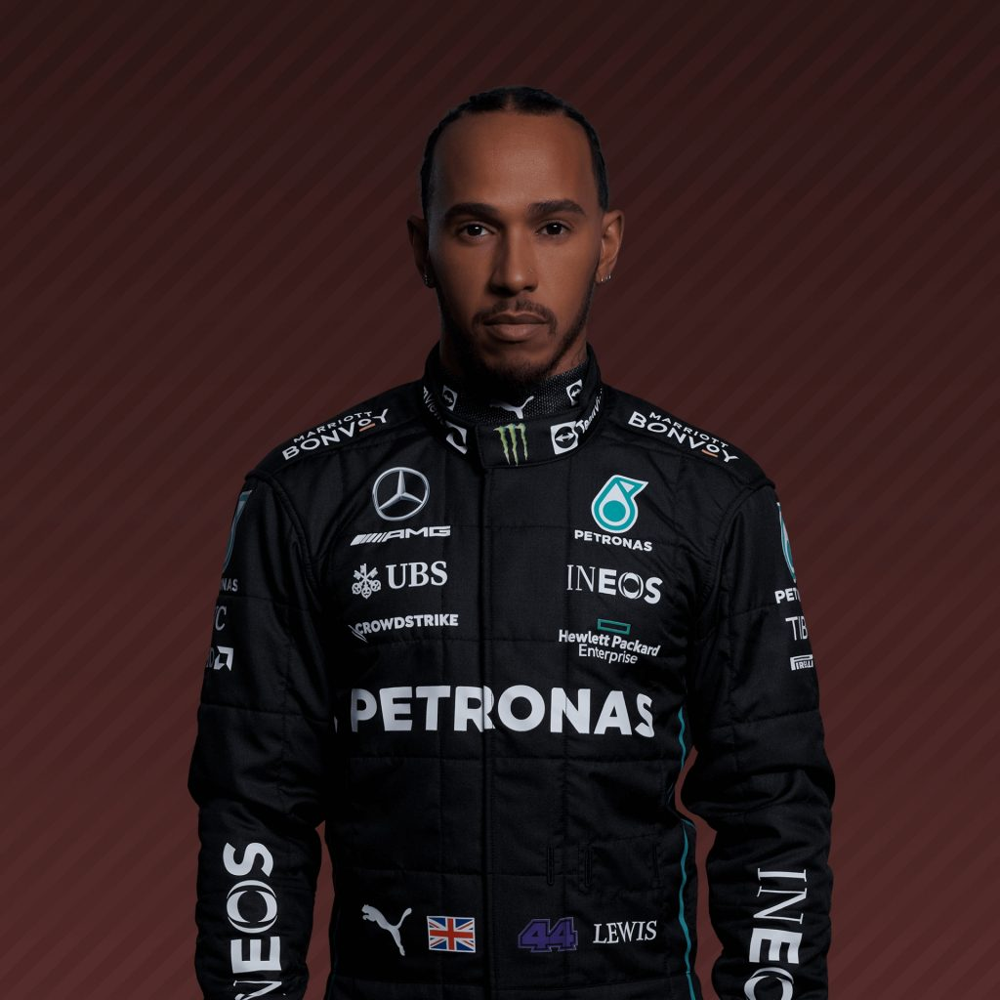
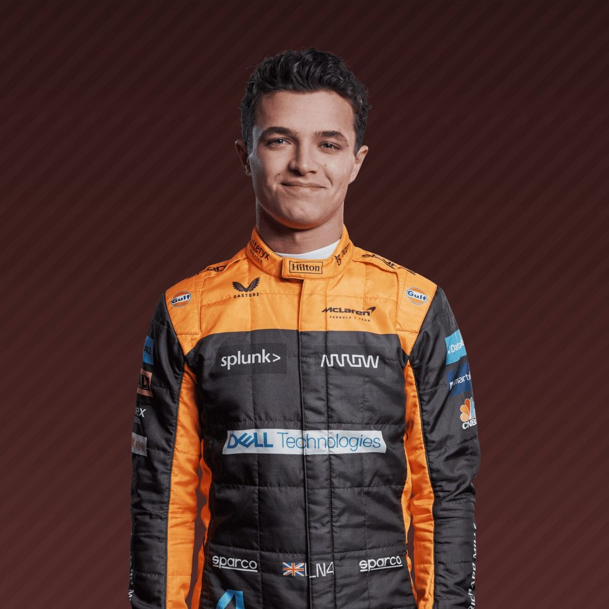
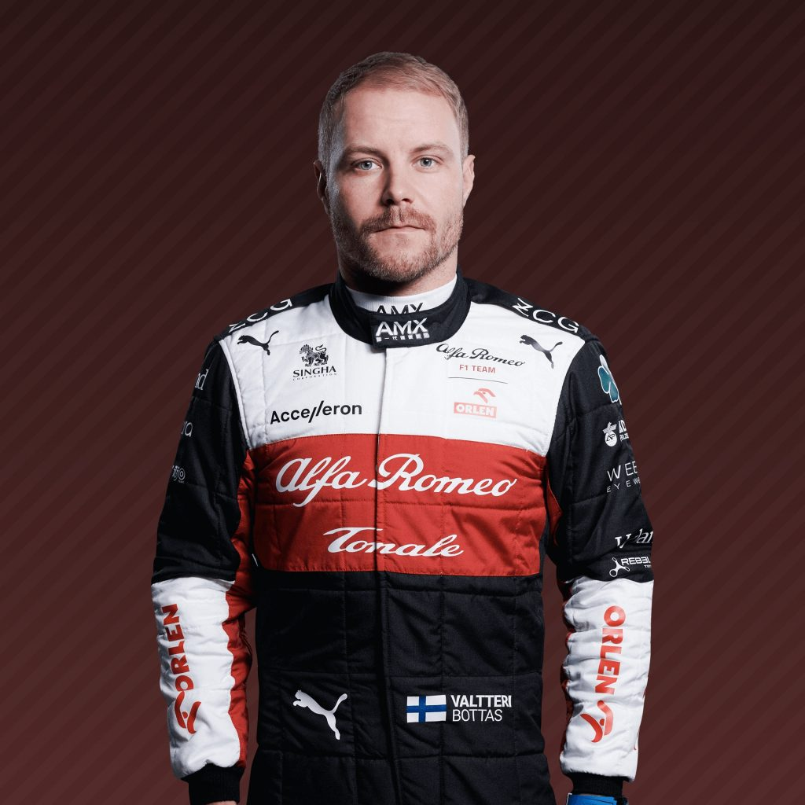
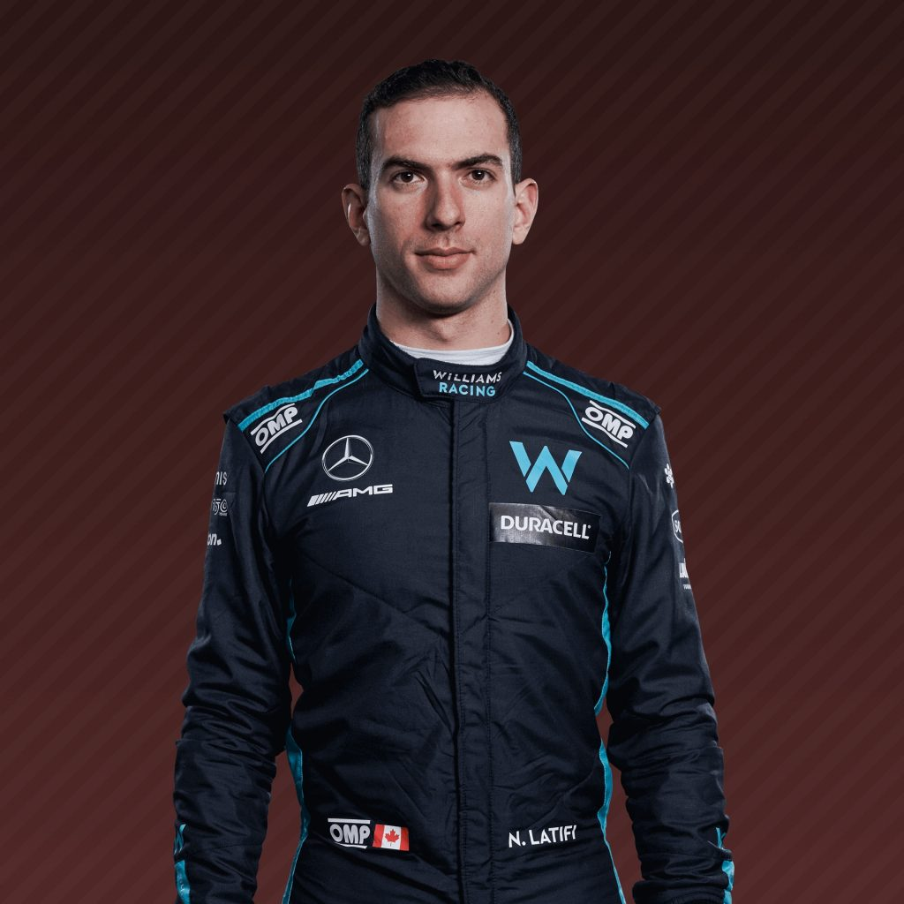

Charles Leclrec
16

| Equipo | Ferrari |
|---|---|
| Pais | Monte Carlo, Monaco |
| Podios | 16 |
| Puntos | 631 |
| GP Competidos | 84 |
| Mejor Puesto | 1°(x4) |
| Campeonatos Mundiales | N/A |
| Fecha de Nacimiento | 16/10/1997 |
Carlos Sainz
55

| Equipo | Ferrari |
|---|---|
| Pais | Madrid, España |
| Podios | 8 |
| Puntos | 569.5 |
| GP Competidos | 144 |
| Mejor Puesto | 2°(x3) |
| Campeonatos Mundiales | N/A |
| Fecha de Nacimiento | 01/09/1994 |
George Russell
63

| Equipo | Mercedes |
|---|---|
| Pais | King's Lynn, Inglaterra |
| Podios | 2 |
| Puntos | 56 |
| GP Competidos | 63 |
| Mejor Puesto | 2°(x1) |
| Campeonatos Mundiales | N/A |
| Fecha de Nacimiento | 15/02/1998 |
Lewis Hamilton
44

| Equipo | Mercedes |
|---|---|
| Pais | Stevenage, Inglaterra |
| Podios | 183 |
| Puntos | 4193.5 |
| GP Competidos | 291 |
| Mejor Puesto | 1°(x103) |
| Campeonatos Mundiales | 7 |
| Fecha de Nacimiento | 07/01/1985 |
Max Verstappen
1

| Equipo | Red Bull Racing |
|---|---|
| Pais | Hasselt, Belgica (Holandes) |
| Podios | 61 |
| Puntos | 1582.5 |
| GP Competidos | 144 |
| Mejor Puesto | 1°(x21) |
| Campeonatos Mundiales | 1 |
| Fecha de Nacimiento | 30/09/1997 |
Segio Perez
11

| Equipo | Red Bull Racing |
|---|---|
| Pais | Guadalajara, Mexico |
| Podios | 16 |
| Puntos | 926 |
| GP Competidos | 217 |
| Mejor Puesto | 1°(x2) |
| Campeonatos Mundiales | N/A |
| Fecha de Nacimiento | 26/01/1990 |
Lando Norris
4

| Equipo | McLaren |
|---|---|
| Pais | Bristol, Inlaterra |
| Podios | 5 |
| Puntos | 322 |
| GP Competidos | 63 |
| Mejor Puesto | 2°(x1) |
| Campeonatos Mundiales | N/A |
| Fecha de Nacimiento | 13/11/1999 |
Daniel Ricciardo
3

| Equipo | McLaren |
|---|---|
| Pais | Perth, Australia |
| Podios | 32 |
| Puntos | 1282 |
| GP Competidos | 213 |
| Mejor Puesto | 1°(x8) |
| Campeonatos Mundiales | N/A |
| Fecha de Nacimiento | 01/07/1989 |
Esteban Ocon
31

| Equipo | Alpine |
|---|---|
| Pais | Normandia, Francia |
| Podios | 2 |
| Puntos | 292 |
| GP Competidos | 92 |
| Mejor Puesto | 1°(x1) |
| Campeonatos Mundiales | N/A |
| Fecha de Nacimiento | 17/09/1996 |
Fernando Alonso
14

| Equipo | Alpine |
|---|---|
| Pais | Oviedo, España |
| Podios | 98 |
| Puntos | 1982 |
| GP Competidos | 339 |
| Mejor Puesto | 1°(x32) |
| Campeonatos Mundiales | 2 |
| Fecha de Nacimiento | 29/07/1981 |
Pierre Gasly
10
| Equipo | AlphaTauri |
|---|---|
| Pais | Rouen, Francia |
| Podios | 3 |
| Puntos | 315 |
| GP Competidos | 89 |
| Mejor Puesto | 1°(x1) |
| Campeonatos Mundiales | N/A |
| Fecha de Nacimiento | 07/02/1996 |
Yuki Tsunoda
22

| Equipo | AlphaTauri |
|---|---|
| Pais | Sagamihara, Japon |
| Podios | N/A |
| Puntos | 36 |
| GP Competidos | 25 |
| Mejor Puesto | 4°(x1) |
| Campeonatos Mundiales | N/A |
| Fecha de Nacimiento | 11/05/2000 |
Valtteri Bottas
77

| Equipo | Alfa Romeo |
|---|---|
| Pais | Nastola, Finlandia |
| Podios | 67 |
| Puntos | 1750 |
| GP Competidos | 181 |
| Mejor Puesto | 1°(x10) |
| Campeonatos Mundiales | N/A |
| Fecha de Nacimiento | 28/08/1989 |
Zhou Guanyu
24

| Equipo | Alfa Romeo |
|---|---|
| Pais | Shangai, China |
| Podios | N/A |
| Puntos | 1 |
| GP Competidos | 3 |
| Mejor Puesto | 10°(x1) |
| Campeonatos Mundiales | N/A |
| Fecha de Nacimiento | 03/05/1999 |
Kevin Magnussen
20

| Equipo | Haas F1 Team |
|---|---|
| Pais | Roskilde, Dinamarca |
| Podios | 1 |
| Puntos | 170 |
| GP Competidos | 123 |
| Mejor Puesto | 2°(x1) |
| Campeonatos Mundiales | N/A |
| Fecha de Nacimiento | 05/10/1992 |
Mick Schumacher
47

| Equipo | Haas F1 Team |
|---|---|
| Pais | Vufflens-le-Château, Suiza (Aleman) |
| Podios | N/A |
| Puntos | 0 |
| GP Competidos | 24 |
| Mejor Puesto | 11°(x1) |
| Campeonatos Mundiales | N/A |
| Fecha de Nacimiento | 22/03/1999 |
Lance Stroll
18

| Equipo | Aston Martin |
|---|---|
| Pais | Montreal, Canada |
| Podios | 3 |
| Puntos | 176 |
| GP Competidos | 103 |
| Mejor Puesto | 3°(x3) |
| Campeonatos Mundiales | N/A |
| Fecha de Nacimiento | 29/10/1998 |
Sebastian Vettel
5

| Equipo | Aston Martin |
|---|---|
| Pais | Heppenheim, Alemania |
| Podios | 122 |
| Puntos | 3061 |
| GP Competidos | 281 |
| Mejor Puesto | 1°(x53) |
| Campeonatos Mundiales | 4 |
| Fecha de Nacimiento | 03/07/1987 |
Alexander Albon
23

| Equipo | Williams |
|---|---|
| Pais | Londres, Inglaterra (Tailandes) |
| Podios | 2 |
| Puntos | 198 |
| GP Competidos | 41 |
| Mejor Puesto | 3°(x2) |
| Campeonatos Mundiales | N/A |
| Fecha de Nacimiento | 23/03/1996 |
Nicholas Latifi
6

| Equipo | Williams |
|---|---|
| Pais | Montreal, Canada |
| Podios | N/A |
| Puntos | 7 |
| GP Competidos | 42 |
| Mejor Puesto | 7°(x1) |
| Campeonatos Mundiales | N/A |
| Fecha de Nacimiento | 29/06/1995 |